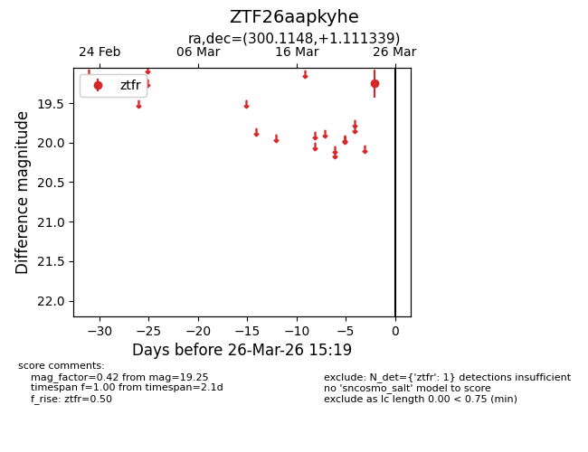
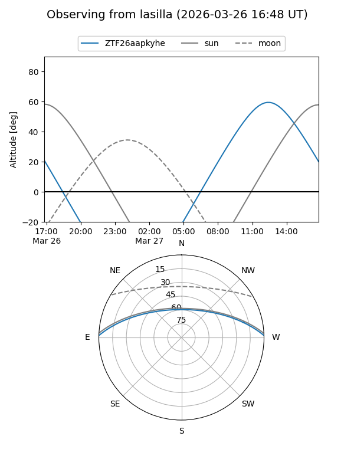
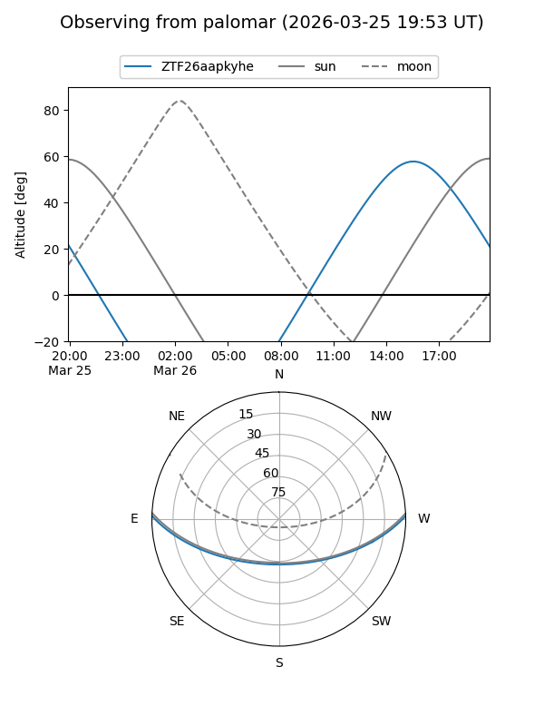

ZTF26aapkyhe
Target ZTF26aapkyhe at 2026-03-26 15:21
Aliases and brokers:
FINK: link
Lasair: link
ALeRCE: link
alt names
ZTF26aapkyhe (ztf,fink_ztf)
Coordinates:
equatorial (ra, dec) = 300.1148,+1.11134
equatorial (HMS+DMS) = 20:00:27.56,+01:06:40.82
galactic (l, b) = (42.0061,-14.77976)
Flags:
Photometry:
last ztfr=19.25
1 ztfr detections
Lightcurve

Visibility


Additional plots